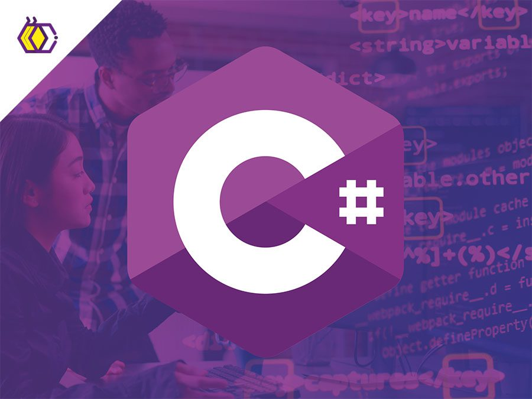

Python
O Python se tornou uma das linguagens de programação mais populares do mundo nos últimos anos. Isso se deve, principalmente, à sua versatilidade: ele funciona para o aprendizado de máquinas, construção de sites e até para automação de tarefas e testes de softwares.

Java Script
O JavaScript, ou JS, como muitos chamam carinhosamente, é uma linguagem de programação interpretada de alto nível que, segundo a Pesquisa de Desenvolvedores do Stack Overflow de 2022, é a mais popular no mundo. Isso se deve principalmente ao fato de que o JavaScript é a linguagem padrão que os navegadores interpretam e que com HTML (“HiperText Markup Language” ou linguagem de Marcação de HiperTexto, utilizada nos navegadores) e CSS (“Cascading Style Sheets”, folhas de estilo em cascata, em Português) formam a base de toda a Web.
C#
Em 2002, com o surgimento da plataforma .NET, o mundo conheceu o C# uma poderosa linguagem de programação orientada a objetos, que pode ser empregada no desenvolvimento de diversos tipos de projetos de software.

R
Em um mundo cada vez mais orientado por dados, a capacidade de analisar, interpretar e extrair informações valiosas tornou-se uma habilidade essencial. A linguagem R, com sua ampla gama de ferramentas e recursos, se destaca como uma das principais aliadas para profissionais e entusiastas que desejam mergulhar no universo da análise de dados, estatística e ciência de dados.